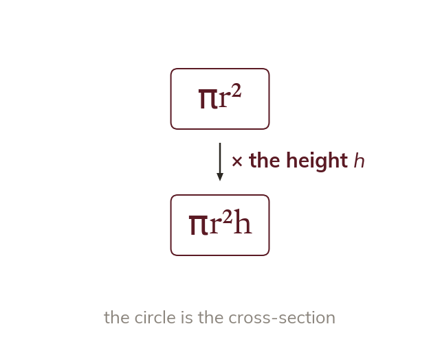
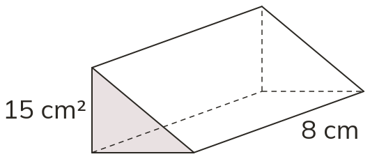
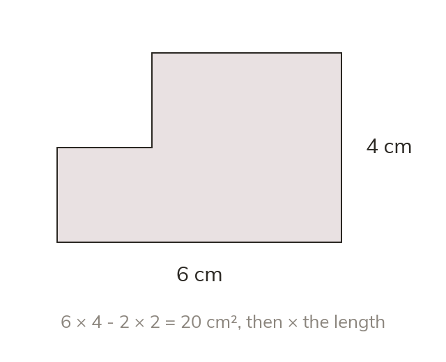
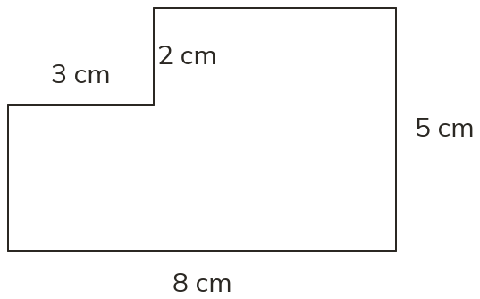

Cross-section times length
A prism has the same cross-section along its whole length. Its volume is cross-sectional area × length.
A prism's cross-section is the same shape all the way along its length, so its volume is just that area multiplied by the length; a cylinder is the round case.
Work down the page at your own pace. Write every answer in your book first, then click to check it.
Read each card, then follow the worked examples one step at a time.
A prism has the same cross-section along its whole length. Its volume is cross-sectional area × length.

A cylinder is a prism with a circular cross-section. So its volume is π × r² × h.

Pick an answer. If it's wrong, the feedback tells you which mistake it was.
Read each card, then follow the worked examples one step at a time.

Find a compound cross-section's area first. Then multiply by the length.

Find the face that repeats before starting. It may not be the face the solid stands on.

Pick an answer. If it's wrong, the feedback tells you which mistake it was.
Finished? Next lesson: 9.13.5 Spheres, Pyramids, Surface Area.
Log in, then search for a code to practise that skill.
Videos, worksheets and more on each part of this lesson.